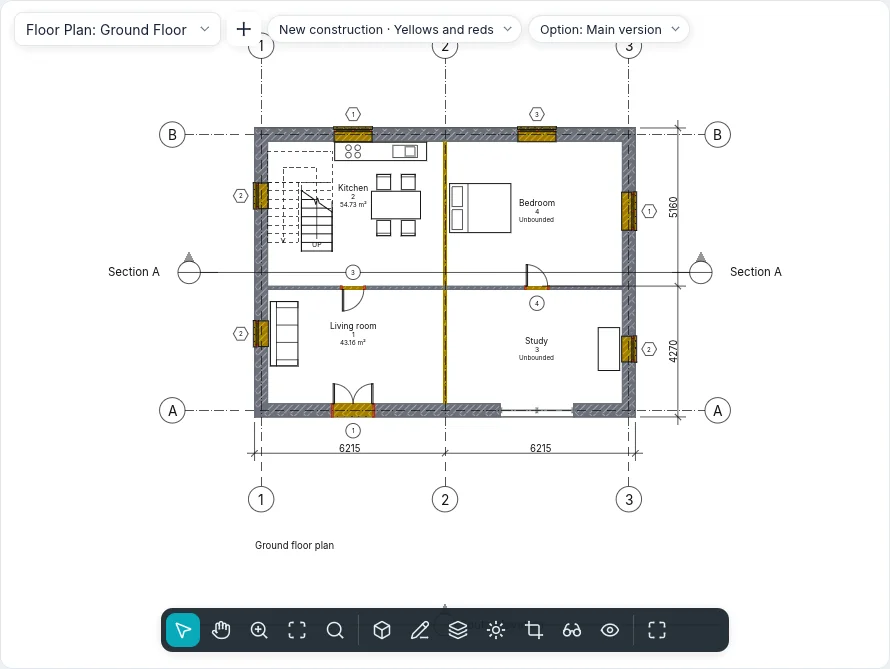

Phases and demolition
A renovation is drawn in phases: the existing state, the new construction and, when needed, phases in between. Every model element is created in a phase and can be demolished in a later one; every view shows the model as it is in its phase, with a phase filter that decides how new, existing, demolished and temporary elements look. One model then gives the plan of the existing state, the demolition plan, the design plan and the comparison drawing in yellows and reds.
Phase statuses
The view's phase and an element's two phases give the element its status in that view:
| Status | The element… |
|---|---|
| New | is created in the view's phase |
| Existing | is created in an earlier phase and not demolished up to the view's phase |
| Demolished | is created in an earlier phase and demolished in the view's phase |
| Temporary | is created and demolished in the view's phase |
An element created after the view's phase, or demolished before it, is not there in that view.
Project phases
Project ▸ Phases ▸ Phases (BIMopen style: Project ▸ Phases…) opens the Phases dialog, with three tabs. A new project has Existing and New construction.
In the Project phases tab each phase is a numbered row, from the past (top) to the future (bottom), with Name and Description. A click on the number selects the row.
- Insert before and Insert after add a phase next to the selected one, named in sequence (Phase 1, Phase 2…). Phases cannot be reordered: insert them in the right place.
- Combine with ▸ Previous or Next removes the selected phase: the elements, views, schedules and rooms that used it move to the phase it is combined with.
Names cannot be empty or repeated. OK applies the three tabs together, as one step that Undo (Ctrl+Z) takes back; the dialog's Cancel changes nothing. The Preview switch in the header shows the active view with the changes not yet confirmed, with the filter chosen under the preview.
Phase filters
In the Phase filters tab each filter says, for each status (New, Existing, Demolished, Temporary), whether its elements are drawn By category (as the view's styles and overrides say), Overridden (with the status's graphic overrides) or Do not display (not drawn, not selectable).
| Default filter | New | Existing | Demolished | Temporary |
|---|---|---|---|---|
| Show all | By category | Overridden | Overridden | Overridden |
| Show demolished + new | By category | Do not display | Overridden | Overridden |
| Show new | By category | Do not display | Do not display | Do not display |
| Show previous + demolished | Do not display | By category | Overridden | Do not display |
| Show previous + new | By category | By category | Do not display | Do not display |
| Show previous phase | Do not display | Overridden | Overridden | Do not display |
| Yellows and reds | Overridden | Overridden | Overridden | Do not display |
New adds a filter (everything by category), Delete removes it: when a view uses it the dialog asks first, and those views go to None. In the first phase Show previous phase shows nothing. To see everything without overrides, choose None as the view's filter.
Graphic overrides
The Graphic overrides tab has a row per status: Projection lines and Cut lines (weight, colour, line pattern), Surface Patterns and Cut patterns (visible, pattern, colour; Clear overrides returns to the category's), Halftone (lines, patterns and fills blended towards the background, not the material colours of shaded views) and Material (its shaded colour and appearance in shaded and realistic views).
They apply where a filter says Overridden. The view's filters and the graphics by element win over them. The defaults follow the Italian practice: existing grey, demolished yellow and dashed, new red, temporary dotted in halftone.
The phase of views
Plans, ceiling plans, sections, elevations, 3D views, area plans and schedules have Phase filter and Phase in the Phases group of their properties. A new view takes the last phase and Show all; Duplicate view keeps phase and filter, then each can change: the same floor at two moments. A view template can set the filter (Phase filter among the included properties), never the phase.
In the BIMopen style the Phase · Filter chip at the top of the view opens a menu that changes either.
The phases of elements
Every model element (walls, doors, windows, components, floors, roofs, ceilings, columns, stairs, railings, ramps, curtain walls) has in the Phases group of its properties:
- Phase created: that of the view it was created (or pasted) in;
- Phase demolished: None, or the phase it is demolished in; only the phase created and the later ones are offered, and None undoes the demolition.
Annotations, dimensions, texts and detail items have no phases: they belong to their view. The sub-walls of a stacked wall and the pieces of a curved wall follow the whole wall. Earlier projects, with the two fixed phases of walls, open with the phases of the same names.
Demolish
Modify ▸ Shapes ▸ Demolish (BIMopen style: Modify ▸ Demolish) works in plans, sections, elevations and 3D views. A hammer appears beside the cursor and what can be demolished in the view's phase is highlighted. A click demolishes the element in that phase, in every view of the same phase:
- a demolished wall takes its doors and windows with it;
- an element created in the same phase becomes temporary;
- when the view's filter does not show demolitions, the element disappears at once.
With elements already selected, Demolish demolishes them all at once, then waits for more clicks. Esc or Modify close the tool; each click is one undo step.

Infills
Where a door or window is demolished and its wall stays, the hole is filled from the demolition's phase on, with the wall's layers: it shows in plan, section, elevation and 3D. Where an opening is made in a later phase than its wall, the wall is whole in the earlier phases.
An infill is selected with a click, for instance in a section with Show previous + new: its Type can be another basic wall type, to draw a different infilling; the infill of the phases before the opening always has the wall's structure. Infills cannot be moved, rotated, mirrored, copied or pasted: they follow their openings.
Rooms and schedules by phase
A room belongs to the phase of the view it is placed in (its Phase is read only): a plan shows, tags and selects only the rooms of its phase, and the same number can exist in different phases. A room is bounded by what exists at the end of its phase: demolishing a partition changes the rooms of that phase and the later ones, not those of the existing state. Copy to clipboard a room from a view and Paste in the active view in a view of another phase: the room goes to that phase with the same properties.
A schedule has Phase and Phase filter as views do (in New schedule the last phase is proposed): its rows are the elements as they are in that phase, those the filter shows. Show previous + demolished lists the doors to remove, Show new those to buy. The fields Phase created and Phase demolished can be shown, sorted, filtered and edited in the cell.
View filters have rules on Phase created and Phase demolished: equal or not, and less than / greater than for earlier or later in the phases' order.
Phase legends
A legend component has the Phase status property: with Existing, Demolished, New or Temporary the sample is drawn with that status's overrides, beside its text.
Exchange
- IFC: with a phased project, Export ▸ IFC asks the Phase to export (the last one is proposed). The elements that exist in that phase are written, each with its status (Status: NEW, EXISTING, DEMOLISH, TEMPORARY) in its class's common property set and its two phases by name. When an IFC file is opened, objects with this status take the matching phases of the project.
- DWG and DXF: in Export CAD formats the option Phase status in the layer name adds the status's suffix to the category's layer (-EXST, -DEMO, -NEWW, -TEMP): a demolished wall goes on A-WALL-DEMO.
Phase mapping of linked models will come with linked models.